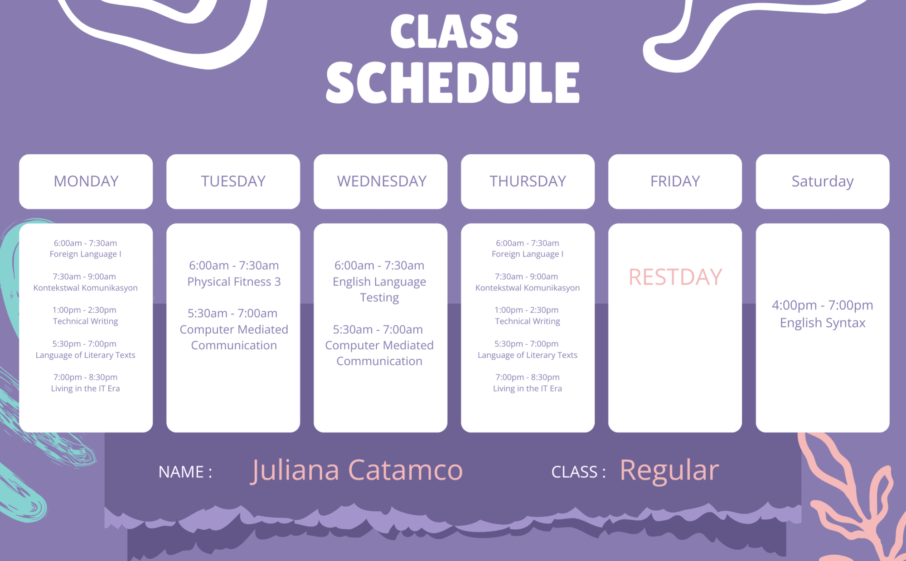

About Me
Hello! I am Juliana Catamco, 22 years old, living at Brgy. Silangan San Mateo Rizal and I am an ABELS Students in SMMC.
Current Subjects
Here are my current subjects that I'm enrolled.
What is the importance of Living in the IT Era to you?
"Living in the IT Era" is crucial since it explains how technology influences our daily life. It teaches us how to utilize computers, the internet, and other digital technologies more efficiently. This information improves our ability to solve issues, communicate with others, and keep up with the world's rapid changes. It also helps us make informed judgments about how to use technology ethically and securely.
How ICT help students like you?
ICT (Information and Communication Technology) benefits students by making learning more convenient and accessible. It enables us to easily access material online, use educational applications, and communicate with professors and students via video chats or messaging. ICT may also help you organize your coursework, create presentations, and improve your typing and research abilities. Overall, it makes studying more adaptable and participatory.